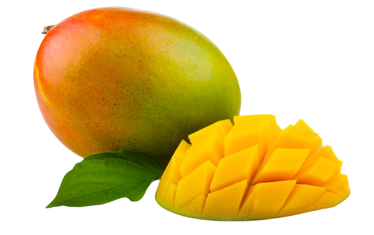

tentangbuah.com
Mangga

Mangga atau mempelam adalah nama sejenis buah, demikian pula nama pohonnya. Mangga termasuk ke dalam genus Mangifera,
yang terdiri dari 35-40 anggota dari famili Anacardiaceae.
Nama "mangga" berasal dari bahasa Tamil, mankay, yang berarti man "pohon mangga" + kay "buah". Kata ini dibawa ke Eropa oleh orang-orang Portugis dan diserap
menjadi manga (bahasa Portugis), mango (bahasa Spanyol dan Inggris) dan lainnya. Mangga berasal dari daerah di sekitar perbatasan India dengan Burma, dan mangga
telah menyebar ke Asia Tenggara sekitar 1500 tahun yang silam. Buah ini dikenal pula dalam berbagai bahasa daerah, seperti pelem atau poh (Jw.), Poh (Bl.), dan Paok (Sas.)
Buah mangga termasuk kelompok buah batu (drupa) yang berdaging, dengan ukuran dan bentuk yang sangat berubah-ubah bergantung pada macamnya, mulai dari bulat (misalnya mangga gedong),
bulat telur (gadung, indramayu, arumanis) hingga lonjong memanjang (mangga golek). Panjang buah kira-kira 2,5–30 cm. Pada bagian ujung buah, ada bagian yang runcing yang disebut paruh.
Di atas paruh ada bagian yang membengkok yang disebut sinus, yang dilanjutkan ke bagian perut.
Source : Wikipedia.com
Khasiat Mangga
- Menjaga kesehatan rambut & kulit
- Menurunkan tekanan darah
- Punya manfaat untuk mata
- Mencegah kanker
- Meredakan sembelit
- Mencegah penyakit jantung
Daftar Harga
| Jenis Mangga | Harga | |
|---|---|---|
| Per Kilo | Per BIji | |
| Mangga Harum Manis | 27.000 | 2.700 |
| Mangga Gedong Gincu | 60.000 | 6.000 |
| Mangga Alpukat | 52.000 | 5.200 |
| Mangga Indramayu | 17.000 | 1.700 |